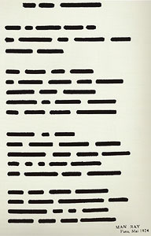

|  | Terminology:This page attempts to clarify some of the jargon specific to the outer approximation, PDEToolbox, and finite element method which has become second nature over the course of the summer. It does not attempt to clarify general fractal jargon. It is suggested that you read the brief theoretical overview if you are not familiar with the outer approximation. |